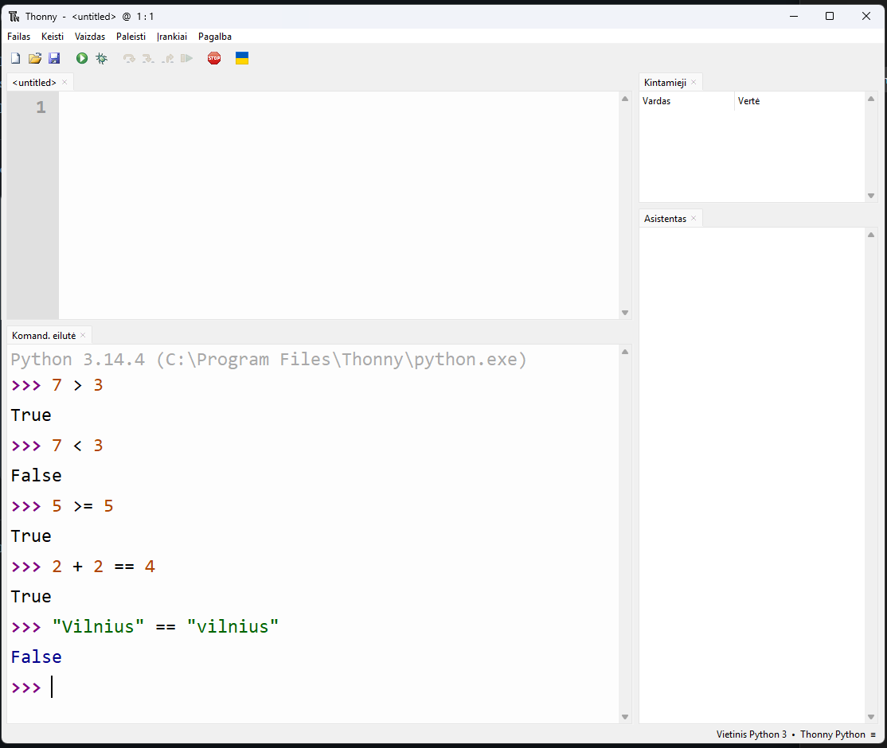
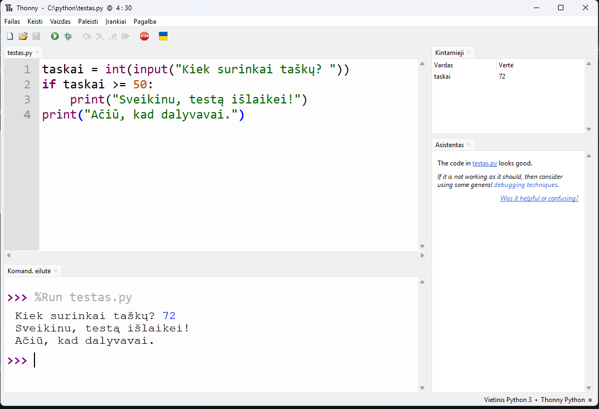
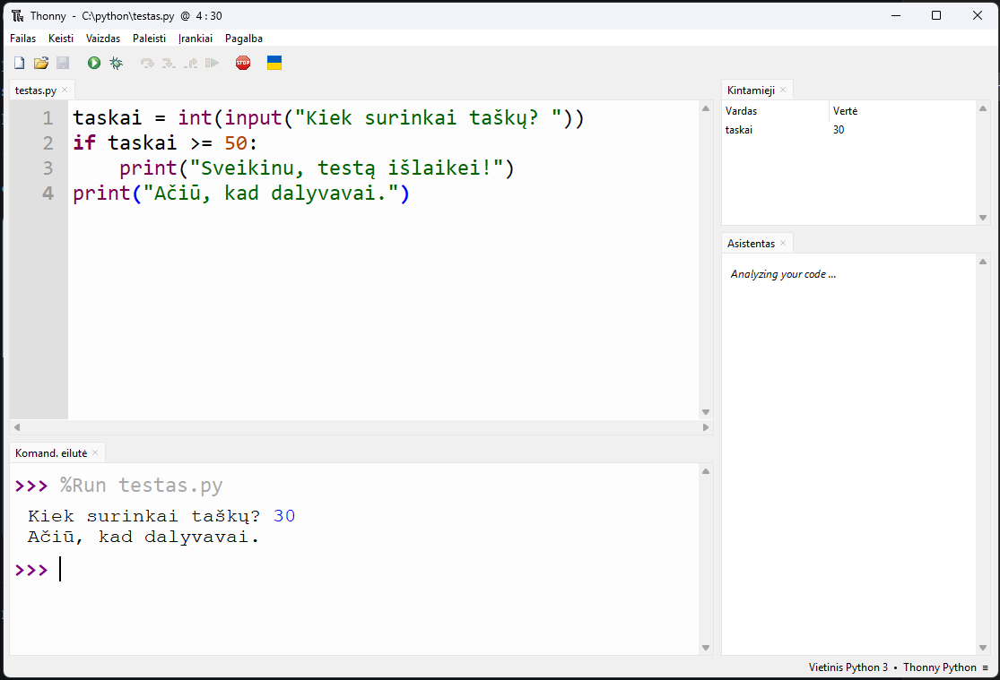
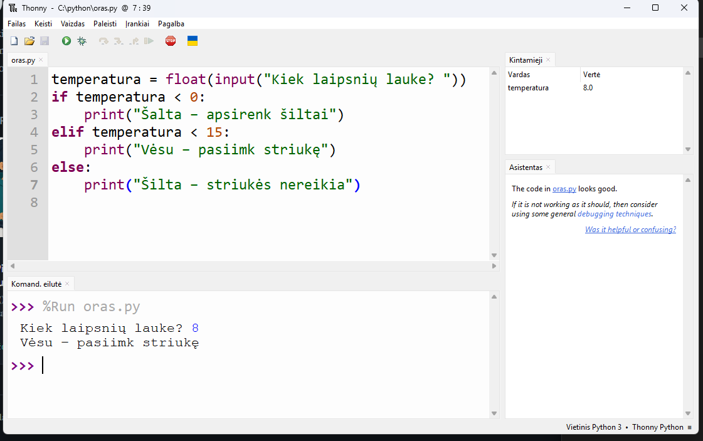
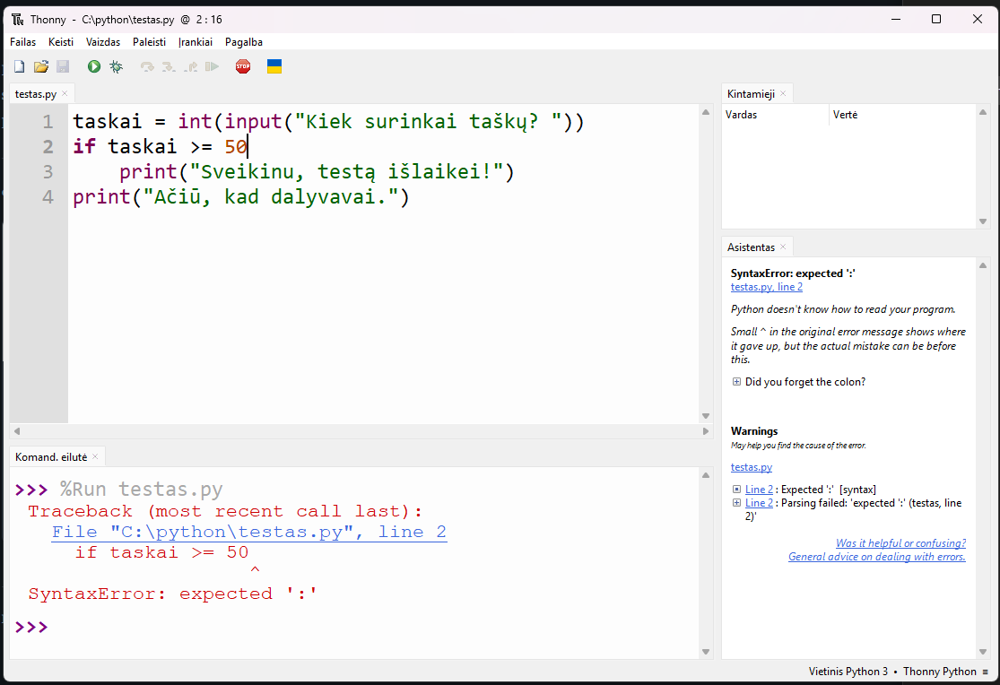
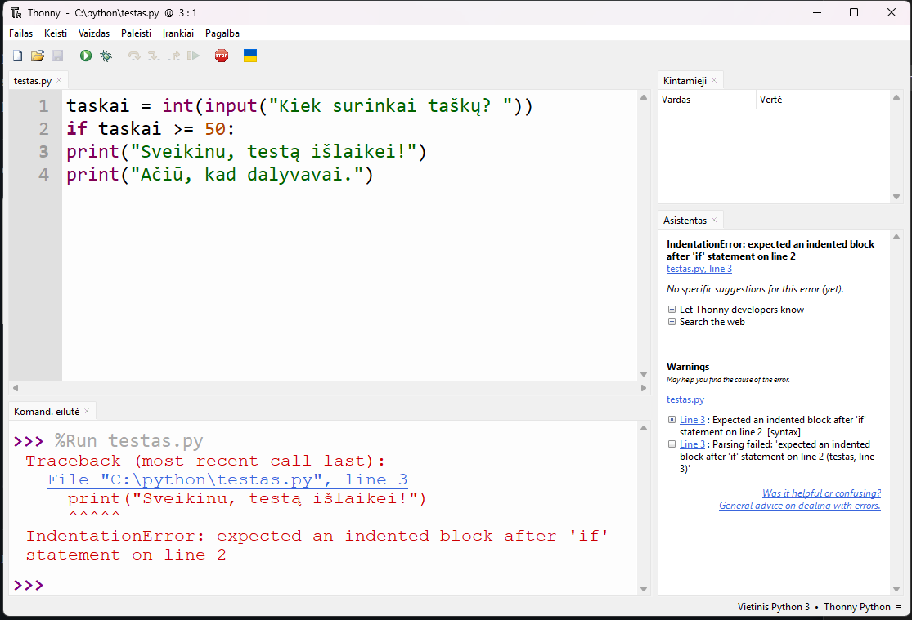

Ko išmoksi
- palyginti skaičius ir tekstus ženklais
==,!=,<,>,<=,>=; - parašyti sąlygos sakinį su
ifirelse; - pasirinkti vieną iš kelių atvejų su
elif; - teisingai naudoti dvitaškį ir įtrauką;
- blokinę schemą su rombu užrašyti Python programa;
- atpažinti ir pataisyti dažniausias sąlygos sakinio klaidas.
Kodo nekopijuok – surink jį klaviatūra pats. Kiekvieną programą paleisk kelis kartus taip, kad suveiktų kiekviena sąlygos šaka.
1. Kodėl programai reikia rinktis
Iki šiol tavo programos visada atlikdavo tuos pačius veiksmus iš eilės: paklausia, apskaičiuoja, išveda. Tačiau gyvenime dažnai sprendžiame: jei lyja, imu skėtį, kitaip – ne. Programos taip pat turi mokėti rinktis.
Blokinėse schemose pasirinkimą žymėjai rombu: jame užrašyta sąlyga, iš jo išeina dvi rodyklės – „Taip“ ir „Ne“. Toks algoritmas vadinamas šakotuoju. Python kalboje rombą atitinka komanda if.
| Blokinėje schemoje | Python kalboje | Kada mokėmės |
|---|---|---|
| Duomenų išvedimas (lygiagretainis) | print() | 1 pamoką |
| Veiksmas, priskyrimas (stačiakampis) | = ir aritmetiniai veiksmai | 1 pamoką |
| Duomenų įvedimas (lygiagretainis) | input() | 2 pamoką |
| Sąlyga (rombas) | if, else, elif | Šią pamoką |
2. Palyginimo ženklai
Sąlyga – tai klausimas, į kurį atsakymas yra „taip“ arba „ne“. Python atsako žodžiais True (tiesa, taip) ir False (netiesa, ne). Išbandyk komandų eilutėje – spustelėk prie >>>, surink palyginimą ir paspausk Enter.
| Ženklas | Ką reiškia | Pavyzdys | Atsakymas |
|---|---|---|---|
> | daugiau | 7 > 3 | True |
< | mažiau | 7 < 3 | False |
>= | daugiau arba lygu | 5 >= 5 | True |
<= | mažiau arba lygu | 4 <= 3 | False |
== | lygu | 2 + 2 == 4 | True |
!= | nelygu | 5 != 5 | False |

3, 7 < 3, 5 >= 5, 2 + 2 == 4 ir "Vilnius" == "vilnius" su atsakymais True, False, True, True, False" loading="lazy">True arba False.Vienas ar du lygybės ženklai? = reiškia „priskirti“: x = 5 įrašo 5 į kintamąjį. == reiškia „ar lygu?“: x == 5 tik patikrina ir atsako True arba False. Sąlygoje visada rašyk ==.
Tekstus taip pat galima lyginti. Python tikrina kiekvieną raidę, todėl didžiosios ir mažosios raidės skiriasi:
>>> "Vilnius" == "Vilnius"
True
>>> "Vilnius" == "vilnius"
FalseKomandų eilutėje patikrink: 10 / 2 == 5, 3 != 4, "labas" == "Labas". Prieš paspausdamas Enter spėk, ką atsakys Python.
3. Komanda if
Komanda if (angl. jei) patikrina sąlygą. Jei sąlyga teisinga, vykdomos po ja pastumtos eilutės. Jei neteisinga – jos praleidžiamos.
Parašyk ir paleisk
Sukurk failą testas.py ir surink:
taskai = int(input("Kiek surinkai taškų? "))
if taskai >= 50:
print("Sveikinu, testą išlaikei!")
print("Ačiū, kad dalyvavai.")Paleisk du kartus: pirmą kartą įvesk 72, antrą – 30.
RezultatasKiek surinkai taškų? 72
Sveikinu, testą išlaikei!
Ačiū, kad dalyvavai.Kiek surinkai taškų? 30
Ačiū, kad dalyvavai.

taskai reikšmė.Antrą kartą sveikinimo nebuvo: sąlyga 30 >= 50 neteisinga, todėl pastumta eilutė praleista. Paskutinė eilutė nepastumta – ji nepriklauso if ir vykdoma visada.
Kaip sudaryta komanda
| Dalis | Ką reiškia |
|---|---|
if | Komandos vardas. Rašomas mažosiomis raidėmis |
taskai >= 50 | Sąlyga – klausimas, į kurį atsakoma „taip“ arba „ne“ |
: | Dvitaškis sąlygos gale. Be jo bus klaida |
| 4 tarpai eilutės pradžioje | Įtrauka. Pastumtos eilutės priklauso if ir vykdomos tik tada, kai sąlyga teisinga |
1 pamokoje rašei, kad tarpai eilutės pradžioje turi reikšmę. Štai kodėl: pagal įtrauką Python supranta, kurios eilutės priklauso sąlygai. Po dvitaškio paspaudus Enter, Thonny pats pastumia kitą eilutę. Kad grįžtum į eilutės pradžią, ištrink tarpus klavišu Backspace.
Sąlygai gali priklausyti ir kelios eilutės – visos jos turi būti vienodai pastumtos:
if taskai >= 50:
print("Sveikinu, testą išlaikei!")
print("Tavo taškai:", taskai)Papildyk programą testas.py: jei surinkta 100 taškų, tegul ji dar išveda Tobulas rezultatas!. Prireiks antros if komandos su ženklu ==.
4. if ir else: dvi šakos
Dažnai reikia atlikti vienus veiksmus, kai sąlyga teisinga, ir kitus – kai neteisinga. Tam yra žodis else (angl. kitaip). Pažiūrėk į blokinę schemą:
Sukurk failą testas2.py:
taskai = int(input("Kiek surinkai taškų? "))
if taskai >= 50:
print("Išlaikei")
else:
print("Neišlaikei")Kiek surinkai taškų? 43
Neišlaikei| Schemos blokas | Programos eilutė |
|---|---|
| Įvesti taskai | taskai = int(input("Kiek surinkai taškų? ")) |
| Rombas su sąlyga | if taskai >= 50: |
| Šaka „Taip“ | pastumtos eilutės po if |
| Šaka „Ne“ | else: ir pastumtos eilutės po juo |
else rašomas be sąlygos, bet su dvitaškiu: else:. Jis pradedamas toje pačioje vietoje kaip if – ne pastumtas.
Parašyk programą, kuri paklausia, koks oras – lyja ar ne. Jei vartotojas įveda taip, programa išveda Pasiimk skėtį, kitaip – Skėčio nereikia.
5. elif: daugiau atvejų
Kartais galimų atvejų daugiau nei du. Tada tarp if ir else rašomas elif – sutrumpinimas iš else if („kitaip, jei“). Sukurk failą oras.py:
temperatura = float(input("Kiek laipsnių lauke? "))
if temperatura < 0:
print("Šalta – apsirenk šiltai")
elif temperatura < 15:
print("Vėsu – pasiimk striukę")
else:
print("Šilta – striukės nereikia")Kiek laipsnių lauke? 8
Vėsu – pasiimk striukę
oras.py: įvedus 8, įvykdoma elif šaka. Kintamasis temperatura yra 8.0, nes skaičius paverstas komanda float().Python tikrina sąlygas iš viršaus į apačią ir vykdo tik pirmą šaką, kurios sąlyga teisinga. Kitos šakos praleidžiamos.
| Įvesta | temperatura < 0 | temperatura < 15 | Išvedama |
|---|---|---|---|
-3 | True – vykdoma | netikrinama | Šalta – apsirenk šiltai |
8 | False | True – vykdoma | Vėsu – pasiimk striukę |
22 | False | False | Šilta – striukės nereikia (else) |
Atkreipk dėmesį: kai įvesta -3, sąlyga -3 < 15 taip pat teisinga, bet Python jos net netikrina – pirmoji šaka jau įvykdyta. Todėl sąlygų tvarka svarbi.
elif šakų gali būti kiek nori. else – nebūtinas, bet jei yra, jis visada paskutinis. Iš visos if – elif – else grandinės įvykdoma daugiausia viena šaka.
Giliau: kelios sąlygos kartu – and ir or
Kartais reikia patikrinti dvi sąlygas iš karto:
and(„ir“) – teisinga tik tada, kai teisingos abi sąlygos;or(„arba“) – teisinga, kai teisinga bent viena sąlyga.
pazymys = int(input("Pažymys: "))
if pazymys < 1 or pazymys > 10:
print("Tokio pažymio nėra")
elif pazymys >= 9 and pazymys <= 10:
print("Puikiai")
else:
print("Pažymys įrašytas")Šių žodžių prireiks C lygio užduotims.
Programoje oras.py sukeisk pirmas dvi sąlygas vietomis: pirma temperatura < 15, paskui temperatura < 0. Paleisk su -3. Kodėl dabar programa nebeparašo „Šalta“?
6. Naujos klaidos
Klaidos pranešimą skaityk taip pat, kaip anksčiau: rask eilutės numerį (line) ir perskaityk paskutinę pranešimo eilutę.
| Klaidingas kodas | Python pranešimas | Kas negerai | Kaip taisyti |
|---|---|---|---|
if taskai >= 50 | SyntaxError: expected ':' | Trūksta dvitaškio sąlygos gale | if taskai >= 50: |
if taskai >= 50:print("Išlaikei") | IndentationError: expected an indented block after 'if' statement on line 2 | Eilutė po if nepastumta | Eilutės pradžioje padėk 4 tarpus |
if taskai = 50: | SyntaxError: invalid syntax. Maybe you meant '==' or ':=' instead of '='? | Vietoj palyginimo parašytas priskyrimas | if taskai == 50: |
taskai = input("Taškai: ")if taskai >= 50: | TypeError: '>=' not supported between instances of 'str' and 'int' | Tekstas lyginamas su skaičiumi – pamiršta int() | taskai = int(input("Taškai: ")) |
print("Labas") be if virš jos | IndentationError: unexpected indent | Eilutė pastumta be reikalo | Ištrink tarpus eilutės pradžioje |

= 50 trūksta dvitaškio, komandų eilutėje raudonas pranešimas SyntaxError: expected ':', dešinėje langelis Asistentas" loading="lazy">line 2), o ženklas ^ rodo vietą, kur dvitaškio pasigedo Python.
if nepastumta. Langelis klaidą paaiškina plačiau, bet angliškai.Pranešimo tekstas gali šiek tiek skirtis, jei tavo kompiuteryje kita Python versija, bet klaidos pavadinimas (SyntaxError, IndentationError, TypeError) bus tas pats.
Naujas klaidos pavadinimas:
IndentationError– įtraukos klaida: eilutė pastumta ne ten, kur reikia, arba nepastumta ten, kur reikia.
Pavojingiausia klaida ta, apie kurią Python nepraneša: sąlyga parašyta neteisingai, pavyzdžiui, taskai > 50 vietoj taskai >= 50. Tada lygiai 50 taškų surinkęs mokinys „neišlaiko“. Todėl programą visada išbandyk ir su ribine reikšme – šiuo atveju su 50.
Programoje testas2.py tyčia ištrink dvitaškį po else ir paleisk. Perskaityk pranešimą, rask eilutės numerį, tada klaidą pataisyk.
7. Praktinės užduotys
Kiekvieną užduotį atlik atskirame faile ir įrašyk aplanke python. A lygio užduotys privalomos visiems. B ir C lygio užduotis rinkis, jei A lygis pavyko.
Kiekvienos programos pirmoje eilutėje komentaru parašyk savo vardą ir ką programa daro. Kiekvieną programą paleisk tiek kartų, kad išbandytum visas šakas.
A lygis: pagrindai
A1 užduotis. Slaptažodis · slaptazodis.py
Programa paklausia slaptažodžio. Jei įvesta katinas, ji išveda Prisijungta, kitaip – Neteisingas slaptažodis.
Slaptažodis: katinas
PrisijungtaSlaptažodis: Katinas
Neteisingas slaptažodisA2 užduotis. Lyginis ar nelyginis · lyginis.py
Programa paklausia sveikojo skaičiaus ir išveda, ar jis lyginis, ar nelyginis.
Įvesk skaičių: 7
7 yra nelyginis skaičiusRodyti patarimą
Prisimink 1 pamokos veiksmą % – dalybos liekaną. Lyginio skaičiaus liekana, dalijant iš 2, lygi 0: skaicius % 2 == 0.
A3 užduotis. Pilnametystė · pilnametyste.py
Programa paklausia amžiaus. Jei žmogui 18 metų ar daugiau, ji išveda Tu pilnametis. Kitaip apskaičiuoja ir išveda, kiek metų liko iki pilnametystės.
Kiek tau metų? 15
Iki pilnametystės liko metų: 3Išbandyk su 15, 18 ir 25.
B lygis: įtvirtinimas
B4 užduotis. Klaidų medžioklė · klaidos3.py
Šioje programoje yra 4 klaidos. Surink ją tiksliai tokią, paleisk ir taisyk po vieną klaidą. Įvedus 5, programa turi išvesti Teigiamas, įvedus 0 – Nulis, įvedus -3 – Neigiamas.
skaicius = input("Įvesk skaičių: ")
if skaicius > 0
print("Teigiamas")
elif skaicius = 0:
print("Nulis")
else:
print("Neigiamas")Rodyti atsakymą
1 eilutė: trūksta int() – be jos 2 eilutėje gausi TypeError. 2 eilutė: trūksta dvitaškio. 3 eilutė: nepastumta. 4 eilutė: vietoj == parašyta =.
skaicius = int(input("Įvesk skaičių: "))
if skaicius > 0:
print("Teigiamas")
elif skaicius == 0:
print("Nulis")
else:
print("Neigiamas")B5 užduotis. Spėk rezultatą · spejimas3.py
Nepaleidęs programos, ant popieriaus užsirašyk, ką ji išves. Tada surink, paleisk ir palygink.
x = 7
if x > 10:
print("A")
elif x > 5:
print("B")
elif x > 3:
print("C")
else:
print("D")
print("E")Rodyti atsakymą
Programa išves B ir E. Sąlyga 7 > 10 neteisinga, 7 > 5 teisinga – išvedama B, o likusios šakos praleidžiamos, nors 7 > 3 irgi teisinga. Eilutė print("E") nepastumta, todėl vykdoma visada.
B6 užduotis. Bilieto kaina · bilietas.py
Muziejuje vaikams iki 7 metų įėjimas nemokamas, mokiniams iki 18 metų bilietas kainuoja 3 Eur, kitiems – 6 Eur. Programa paklausia amžiaus ir išveda bilieto kainą.
Kiek tau metų? 14
Bilieto kaina: 3 EurIšbandyk su 5, 7, 17, 18 ir 40. Ar teisingai suveikia ribinės reikšmės 7 ir 18?
C lygis: iššūkis
C7 užduotis. Didesnis skaičius · didesnis.py
Programa paklausia dviejų skaičių ir išveda didesnįjį. Jei skaičiai lygūs, ji išveda Skaičiai lygūs. Funkcijos max() naudoti negalima.
Pirmas skaičius: 12
Antras skaičius: 31
Didesnis skaičius: 31C8 užduotis. Keliamieji metai · keliamieji.py
Metai yra keliamieji, jei jie dalijasi iš 4, bet nesidalija iš 100. Išimtis: metai, kurie dalijasi iš 400, irgi keliamieji. Programa paklausia metų ir išveda, ar jie keliamieji.
Metai: 2024
2024 – keliamieji metaiPatikrink: 2024 ir 2000 – keliamieji, 2025 ir 1900 – ne.
Rodyti patarimą
Prireiks and ir or (žr. 5 skyrių „Giliau“). „Dalijasi iš 4“ užrašoma metai % 4 == 0, „nesidalija iš 100“ – metai % 100 != 0.
C9 užduotis. Trikampis · trikampis.py
Programa paklausia trijų trikampio kraštinių ilgių ir išveda, koks tai trikampis: lygiakraštis (visos kraštinės lygios), lygiašonis (lygios dvi kraštinės) ar įvairiakraštis (visos skirtingos).
a = 5
b = 5
c = 8
Trikampis lygiašonisRodyti patarimą
Pirma patikrink, ar lygios visos trys kraštinės: a == b and b == c. Jei ne – ar lygios bent dvi: a == b or b == c or a == c. Sąlygų tvarka svarbi.
8. Pasitikrink
Atsakyk į klausimus nepaleisdamas Thonny. Atsakymą užsirašyk ir tik tada atverk teisingą.
1. Kuo skiriasi x = 5 ir x == 5?
x = 5 įrašo 5 į kintamąjį x. x == 5 tik patikrina, ar x lygus 5, ir atsako True arba False.
2. Ką atsakys Python: 8 >= 8?
True – ženklas >= reiškia „daugiau arba lygu“.
3. Ką atsakys Python: "Labas" == "labas"?
False – didžiosios ir mažosios raidės skiriasi.
4. Ką išves programa: x = 4, if x > 5:, pastumta print("A"), nepastumta print("B")?
Tik B. Sąlyga 4 > 5 neteisinga, todėl pastumta eilutė praleidžiama, o nepastumta vykdoma visada.
5. Ko trūksta eilutėje if amzius < 18?
Dvitaškio gale: if amzius < 18:. Be jo Python praneš SyntaxError: expected ':'.
6. Ką išves programa oras.py, įvedus -5?
Tik Šalta – apsirenk šiltai. Pirma teisinga sąlyga yra -5 < 0, todėl likusios šakos praleidžiamos.
7. Kiek šakų gali būti įvykdyta grandinėje if – elif – else?
Daugiausia viena – pirmoji, kurios sąlyga teisinga. Jei yra else, įvykdoma lygiai viena šaka.
8. Kaip užrašyti sąlygą „skaičius lyginis“?
skaicius % 2 == 0 – lyginio skaičiaus dalybos iš 2 liekana lygi 0.
Jei teisingai atsakei į 6 ar daugiau klausimų, pamokos medžiagą supratai. Jei mažiau – grįžk prie skyriaus, kuriame suklydai, ir pakartok jo pavyzdžius.
9. Atsiskaitymas
Atsiskaitymui atsiųsk tris A lygio programas: slaptazodis.py, lyginis.py ir pilnametyste.py. Jei atlikai B ar C lygio užduočių, pridėk ir jas.
- Kiekvieną programą paleisk dar kartą ir patikrink, ar veikia visos jos šakos.
- Patikrink, ar kiekvienos programos pirmoje eilutėje yra komentaras su tavo vardu.
- Failus prisek prie laiško ir išsiųsk adresu vidas.darbai@gmail.com.
- Laiško temoje parašyk klasę, vardą, pavardę ir „Python 3 pamoka“.
Įsivertink
Pamoką įveikei, jei gali pasakyti:
- moku palyginti skaičius ir tekstus ir žinu, kuo skiriasi
=ir==; - moku parašyti sąlygą su
ifirelse, nepamirštu dvitaškio ir įtraukos; - moku pasirinkti vieną iš kelių atvejų su
elifir suprantu, kodėl sąlygų tvarka svarbi; - moku blokinę schemą su rombu užrašyti programa;
- gavęs
IndentationErrorarSyntaxError: expected ':', žinau, ką taisyti.
Svarbiausia iš šios pamokos
| Kas | Kaip rašoma | Pavyzdys |
|---|---|---|
| Palyginimas | == != < > <= >= | taskai >= 50 |
| Viena šaka | if sąlyga: | if x > 0: |
| Dvi šakos | if sąlyga: … else: | else: |
| Daugiau šakų | if … elif sąlyga: … else: | elif x == 0: |
| Įtrauka | 4 tarpai šakos eilutėse | print("Taip") |
Kitoje pamokoje
Dabar tavo programos moka rinktis, bet kiekvieną veiksmą vis dar atlieka vieną kartą. Toliau išmoksi kartoti veiksmus – kaip blokinėse schemose, kur rodyklė grįžta atgal.